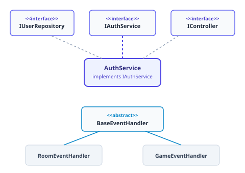
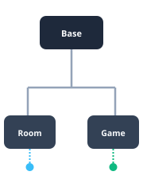
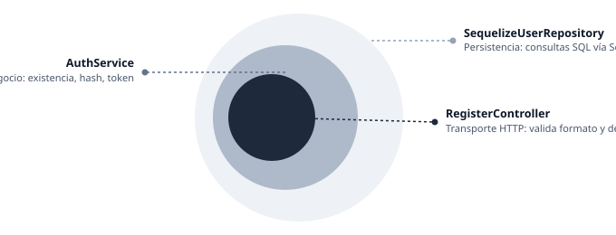

Arquitectura Empresarial de Backend con POO y Principios SOLID
Refactorización Modular del Proyecto Formativo Elemental Battlecards
Sequelize (SQLite / PostgreSQL) · Jest
Protocolo Oficial de la Sustentación
Estructura estricta de evaluación técnica en 20 minutos según la guía del taller
Criterios Clave de Aprobación
Alineación UML-Código
Correspondencia milimétrica entre diagramas y TypeScript.
Bajo Acoplamiento
Ausencia de operadores new en módulos de alto nivel.
Dominio Técnico
Uso de vocabulario formal: contratos, abstracción, cohesión, sustitución.
Defensa de la Arquitectura en Capas Verticales
Flujo Unidireccional y Puntos de Composición
Principios Estructurales
Dirección única de dependencias
Los controladores conocen servicios; los servicios conocen contratos de repositorios; nunca a la inversa.
Composition Roots aislados
authRoutes.ts y server.ts son los únicos lugares donde se instancian clases concretas.
Dos subsistemas integrados
Módulo Auth (arquitectura multicapa para HTTP) y Módulo Socket (herencia polimórfica en tiempo real).
Estructura de Capas
Diagrama de Clases (UML) del Backend
Modelado de Interfaces, Implementaciones y Jerarquías

5 Interfaces Segregadas (Contratos Puros)
Pilares POO: Abstracción y Encapsulamiento
Ocultamiento de Detalles y Contratos Desacoplados
1. Abstracción — Definir el "QUÉ" sin atarse al "CÓMO"
Archivo: src/interfaces/IHashService.ts
- No menciona
bcrypt, ni número de salt rounds, ni algoritmos criptográficos. - El servicio solo sabe que puede hashear y comparar.
2. Encapsulamiento — Protección Inmutable del Estado
Archivo: src/entities/UserEntity.ts
- Modificadores
private readonlyen todos los campos. - Exclusividad de getters para acceso de lectura.
- Nadie puede mutar ni sobreescribir la entidad una vez instanciada.
- La entidad es completamente inmutable.
Pilares POO: Herencia y Polimorfismo Dinámico
Reutilización de Código y Resolución Dinámica de Tipos
3. Herencia — Relación Lógica "Es-Un"
Archivo Base: src/socket/BaseEventHandler.ts
- Subclases:
RoomEventHandler.tsyGameEventHandler.ts - Reutilizan el constructor (
io,rooms) y métodos utilitarios compartidos (emitToRoom,getRoomOrFail). - Sin duplicar ni una sola línea de código.
4. Polimorfismo de Subtipo en Ejecución
Archivo: src/server.ts (Líneas 63–72)
- Tipo estático:
BaseEventHandler[]— TypeScript solo ve la abstracción base. - Objetos concretos:
RoomEventHandleryGameEventHandlerinstanciados en el array. - Invocación polimórfica: el runtime despacha el método de la subclase correspondiente.
- Mismo método, comportamiento completamente distinto según el tipo real.

Principio SOLID: Responsabilidad Única (SRP)
Una Sola Razón para Cambiar por Cada Capa

RegisterController
Solo valida formato HTTP y delega inmediatamente al servicio. Cero lógica de hash, cero SQL.
AuthService
Valida existencia, pide hash, crea usuario, genera token. No sabe qué es req ni res. Si migramos a gRPC o WebSockets, permanece intacto.
SequelizeUserRepository
Única clase que importa Sequelize y ejecuta consultas SQL. Encapsula toda la lógica de acceso a datos.
Principio SOLID: Inversión de Dependencias (DIP)
Inyección por Constructor y Aislamiento del Operador new
1. Inyección de Dependencias por Constructor
Archivo: src/services/AuthService.ts
- Todos los campos son de tipo interfaz (
IUserRepository,IHashService,ITokenService). - Recibe todas sus dependencias ya instanciadas en su constructor.
- Los módulos de alto nivel dependen de abstracciones, nunca de módulos de bajo nivel.
2. Composition Root — El Único Lugar donde Existen los new
Archivo: src/routes/authRoutes.ts
- Ensamblaje centralizado del grafo de dependencias.
- Instanciación de
SequelizeUserRepository,BcryptHashService,JwtTokenService. - Inyección en
AuthServicey controladores. - Cumplimiento al 100% del criterio de bajo acoplamiento.
new aparece exclusivamente en el Composition Root — nunca en módulos de alto nivel.
Principios OCP, LSP e ISP Garantizados
Extensibilidad, Sustituibilidad y Segregación de Interfaces
Open/Closed Principle (OCP)
Para cambiar el motor de hashing de bcrypt a Argon2, no modificamos AuthService. Simplemente creamos Argon2HashService implements IHashService. En authRoutes.ts cambiamos una sola línea.
Liskov Substitution Principle (LSP)
Cualquier subtipo puede sustituir al supertipo sin romper el sistema. SequelizeUserRepository es sustituido por un objeto mock en pruebas unitarias. El servicio funciona exactamente igual y pasa los 38 tests sin quejarse.
Interface Segregation Principle (ISP)
5 interfaces pequeñas y especializadas en vez de una interfaz monolítica. BcryptHashService no se ve obligado a conocer tokens ni bases de datos.
Resolución de Escenarios de Escalabilidad (Fase 3)
Respuestas Técnicas Inmediatas a Cambios de Requerimientos
¿Login con Google OAuth?
Ninguna clase existente se altera. Creamos GoogleAuthService implements IAuthService. En authRoutes.ts montamos la ruta /google e inyectamos el nuevo servicio. Los controladores y el modelo de usuario permanecen intactos.
¿SQLite → PostgreSQL o MongoDB?
Para PostgreSQL, SequelizeUserRepository ya está listo: solo cambiamos la variable de entorno. Para MongoDB, creamos MongoUserRepository implements IUserRepository. Cambiamos una línea en authRoutes.ts. AuthService ni siquiera sabe qué motor guarda la información.
¿Chat o Torneos?
Creamos ChatEventHandler extends BaseEventHandler y TournamentEventHandler extends BaseEventHandler. Implementamos registerEvents(socket). En server.ts agregamos una sola línea al array handlers. El ciclo forEach polimórfico lo registrará automáticamente.